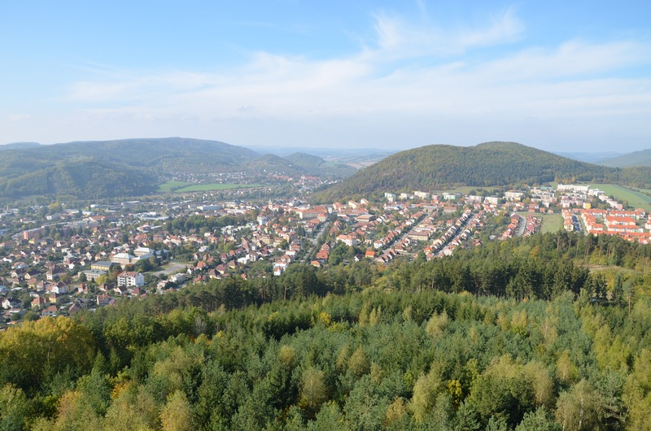
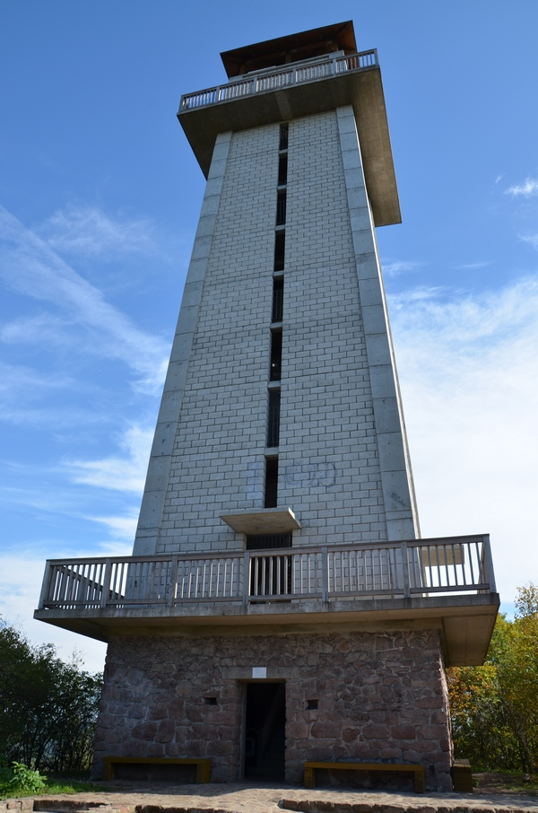
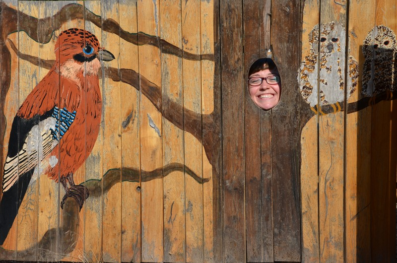
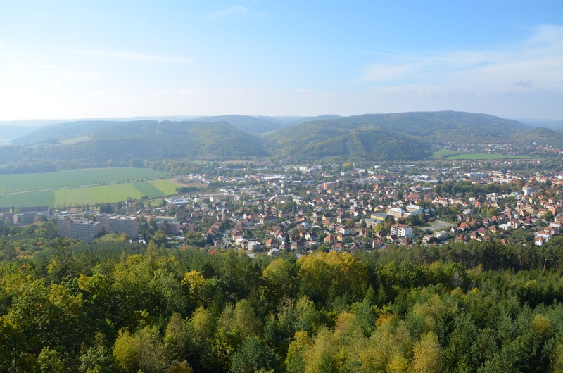
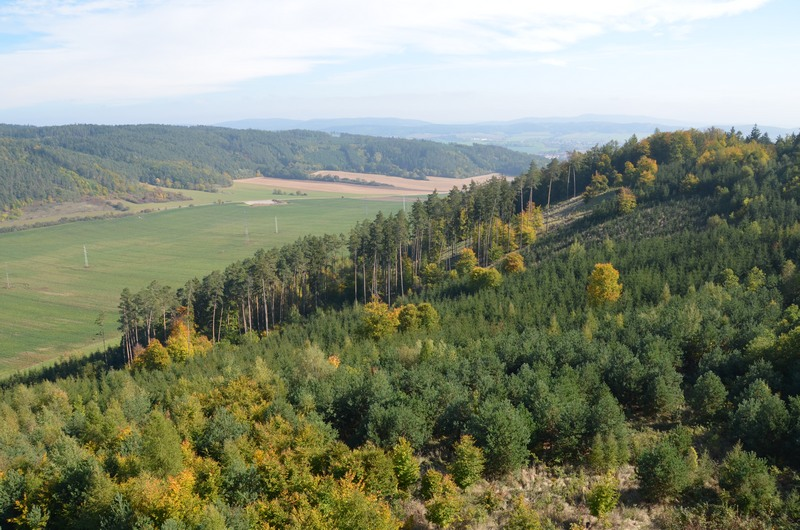
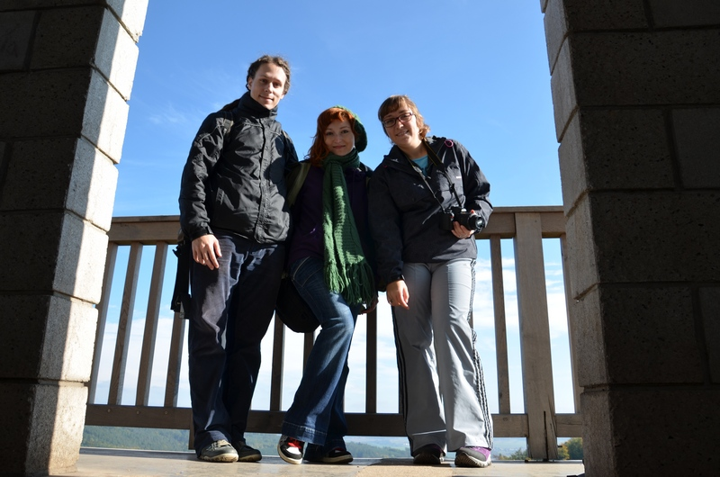
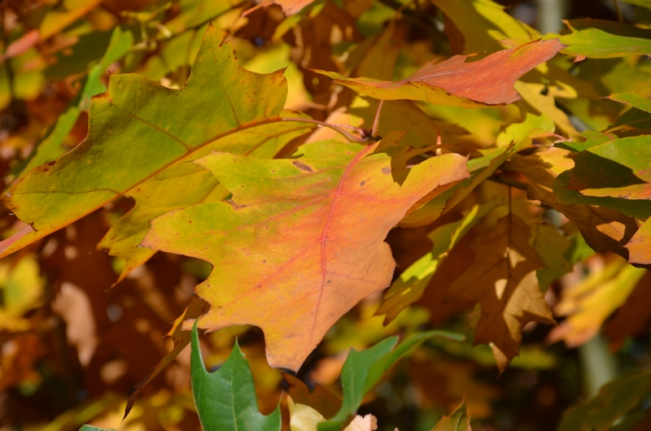
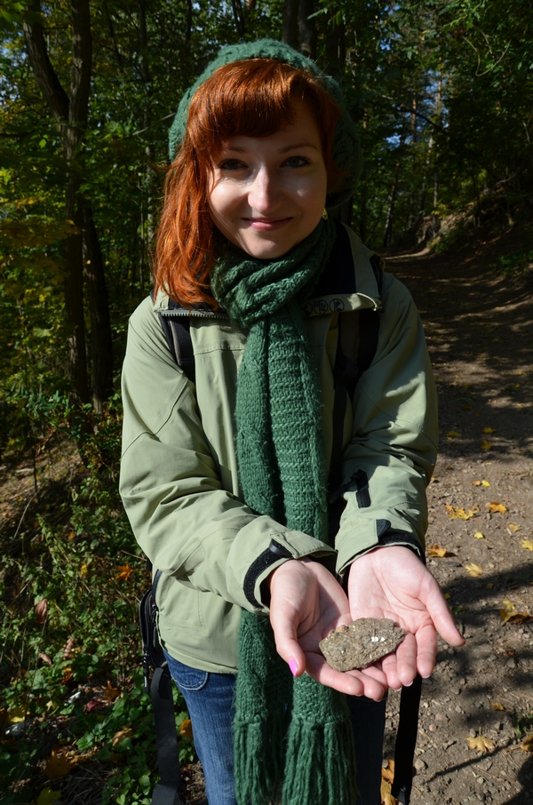
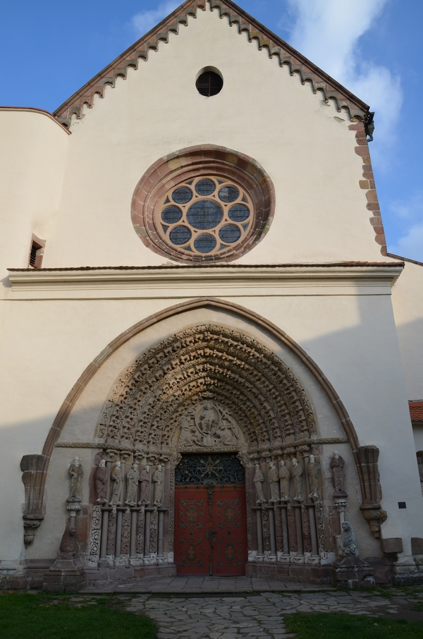
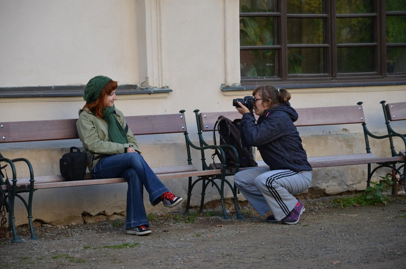

Po dnešních zprávách o počasí a shlédnutí snímků zasněžených Čech se ani nechce věřit, že ještě před 14ti dny jsme si užívali nádherného slunečného počasí. Já si tedy užila horského sluníčka ještě o další týden později při zcela neplánovaném zabloudění do Českého Jiřetína, ale o tomto dobrodružství třeba zase někdy jindy ;-). Dnes se zatouláme alespoň ve vzpomínkách na pravděpodobně poslední letošní výpravu - do Tišnova u Brna.

Tišnov
Na výlet nás vytáhla Nezdař. Bohužel se nikomu z nás nepodařilo zlanařit další výletníky, takže jsme jeli v komorním složení. Přestože jsem počítala spíš s tou horší variantou počasí a nezapomněla přibalit rukavice :D, byla jsem nakonec příjemně překvapená, že už kousek za Brnem vykouklo sluníčko a drželo se nás po celý den. Nejprve jsme se vydali vlakem do obce Hradčany (asi 20 minut od Brna), odkud jsme započali náš výstup na rozhlednu Klucanina, která je od roku 2003 dominantou Tišnova. Nejedná se o nijak náročný pochod, takže nás to zas tak moc nezmohlo. Po cestě nás zabavilo především několik tabulí naučné stezky, u kterých jsme se dozvěděli spoustu zajímavostí o místní fauně a flóře :D. Vůbec celá trasa Tišnov - Klucanina je ideálním výletem pro rodiny s dětmi, které nahoře čeká dřevěné “bludiště” - sami jsme ho otestovali :D…

Rozhledna Klucanina

Have some fun :D
Rozhledna Klucanina má charakteristický tvar čtyřboké věže s nízkou stanovou střechou a zdobí ji výrazný vyhlídkový ochoz. Dobrá zpráva je, že Klucanina je zdarma přístupná po celý rok a je z ní opravdu nádherný výhled do kraje… geolovce možná nalákám také na to, že přímo uvnitř rozhledny je velmi důmyslně ukrytá keška ;-)!

Krásný výhled na město…

…i na lesy

Vrcholovka
Mezitím nám už docela vyhládlo, takže další program byl jasný - sestup dolů do Tišnova a oběd :-). Vybrali jsme si první restauraci, kterou jsme měli na ráně. Nacházela se v zajímavé víceúčelové budově, která zřejmě sloužila jako kino, tělocvična a kdovíco ještě. Krom jednoho štamgasta v ní bylo pusto a prázdno, ale meníčko měli výborné. Ve stavu přecpanosti už se nám pochopitelně nikam šlapat nechtělo, ale hecnuli jsme se ještě k návštěvě nedalekého kláštera Porta Coeli v sousedním Předklášteří. Jedná se o ženský cisterciácký klášter, který je známý především unikátním bohatě zdobeným gotickým portálem v západním průčelí klášterního kostela. Zasvěcení si třeba vzpomenou na školní výlet v tercii - my s Nezdař jsme horko těžko daly dohromady pár útržkovitých vzpomínek :D.

Podzim v Tišnově

Našla jsem drahokam :-)

Gotický portál

Fotograf Nezdař
Přestože podzim nemám moc v lásce kvůli tomu, jak snadno, rychle a bez varování se dokáže převrátit v zimu, jeho barevná poetika a brodění se v suchém listí má něco do sebe. V Tišnově jsme si toho užili dosytosti a teď už nezbývá, než se zahřát aspoň prohlížením fotek a těšit se zase na jaro :-)…


Komentáře (3)
Komentáře jsou uzavřené.